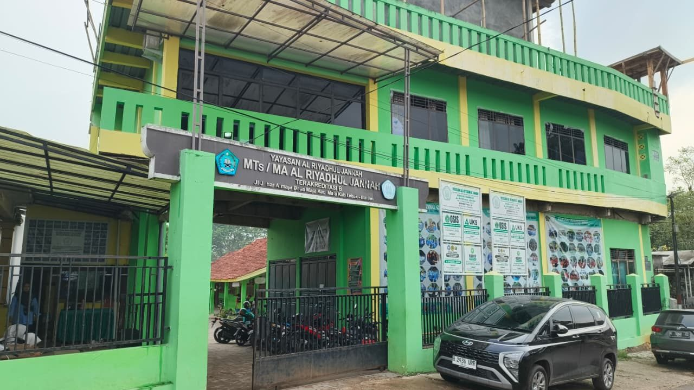
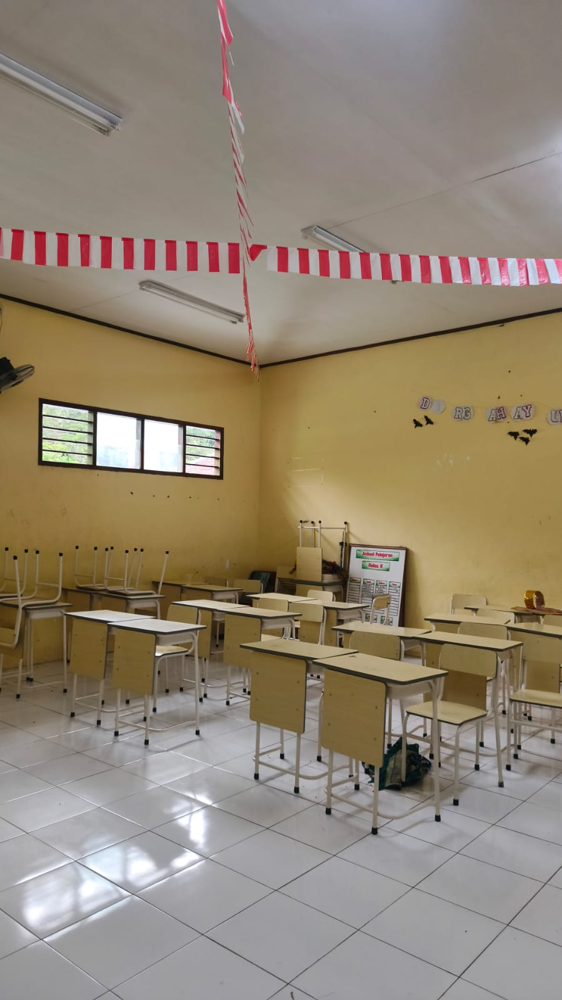
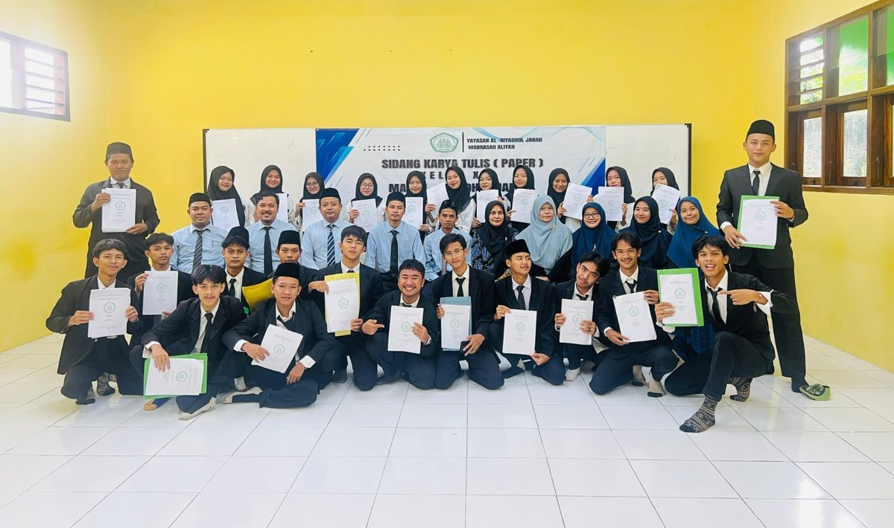
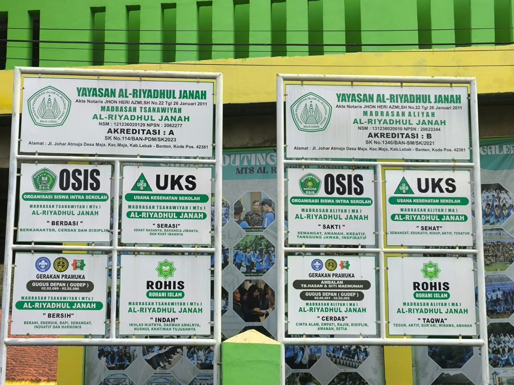

Fasilitas Madrasah
Gedung MA Al-Riyadhul Jannah
Lingkungan gedung sekolah Yayasan Al-Riyadhul Jannah di Maja, Lebak, Banten.
Pembelajaran yang mengintegrasikan ilmu pengetahuan dengan nilai Al-Qur'an dan As-Sunnah.
Membentuk siswa agar memiliki akhlak, tanggung jawab, dan kepedulian terhadap lingkungan.
Siswa diberikan pengalaman belajar melalui proyek yang mendorong kreativitas dan kemampuan memecahkan masalah.
Menggunakan teknologi informasi sebagai bagian dari proses pembelajaran.
Dokumentasi lingkungan madrasah, ruang belajar, serta kegiatan siswa.

Lingkungan gedung sekolah Yayasan Al-Riyadhul Jannah di Maja, Lebak, Banten.

Kegiatan praktik teknologi informasi untuk mendukung pembelajaran siswa.

Suasana ruang kelas yang digunakan untuk kegiatan belajar mengajar sehari-hari.

Latihan rutin ekstrakurikuler bela diri untuk melatih kedisiplinan dan ketangkasan siswa.

Kegiatan kepramukaan dalam membentuk karakter disiplin, tangguh, dan kerja sama tim.

Pengembangan bakat olahraga dan sportivitas siswa di lapangan.

Pembinaan keagamaan, akhlak mulia, dan kegiatan dakwah siswa di lingkungan sekolah.

Kegiatan sidang karya tulis ilmiah siswa MA Al-Riyadhul Jannah sebagai bekal akademik.

Informasi akreditasi serta unit organisasi OSIS, UKS, Pramuka, dan Rohis.
Pelajari prosedur pendaftaran langsung di sekolah dan unduh formulir pendaftaran resmi.
Info Pendaftaran